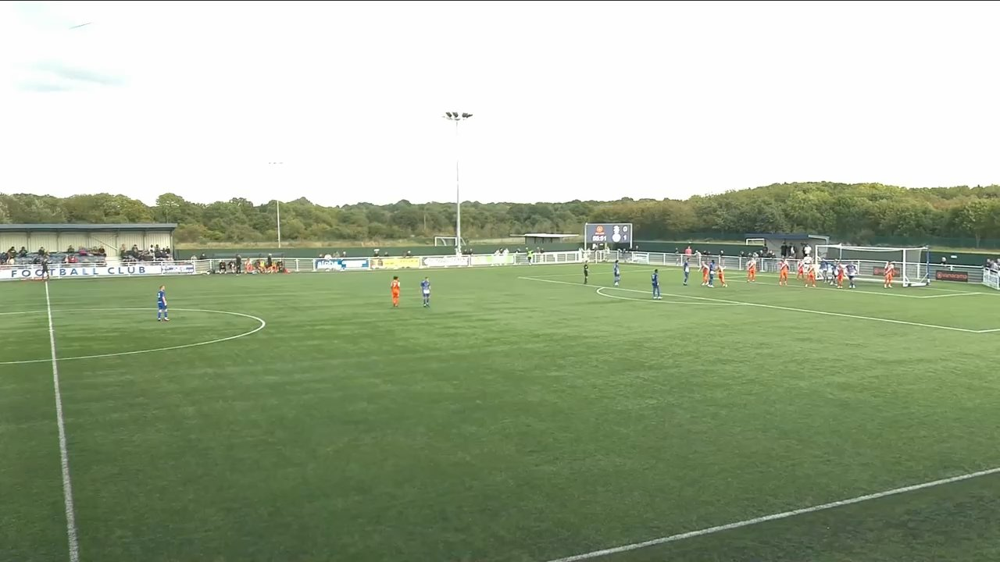

Football / Applied Analysis
Bath City FC Set-Piece Analysis
Senior football analysis support combining real-time coding, pre- and post-game review, and set-piece analysis to sharpen tactical detail and scoring opportunities.
Football / Applied Analysis
Senior football analysis support combining real-time coding, pre- and post-game review, and set-piece analysis to sharpen tactical detail and scoring opportunities.
This work centres on structuring set-piece review in a way that makes tendencies easier to spot, easier to communicate, and easier for staff to act on under normal weekly time pressure.
Through RedZone Analysis, this work contributed to refining team tactics and set-piece strategies, helping increase the success rate of scoring opportunities for Bath City FC. This page draws on a real opposition report built ahead of a Bath City matchday, using footage of the upcoming opponent to break down their attacking and defensive set-piece patterns.


Opposition reports are built to be read fast: club branding up front, then footage broken into attacking style, defensive shape, and set-piece routines so coaching staff can move straight from report to matchday plan.
Need similar support?
If you need structured support around review workflows or set-piece presentation, I am happy to discuss it.